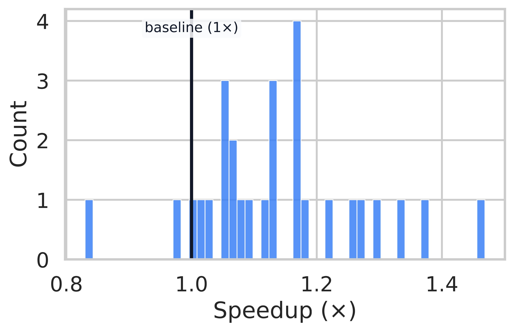
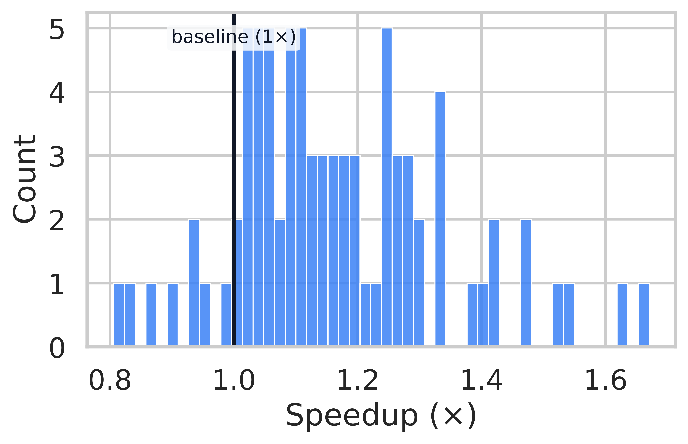
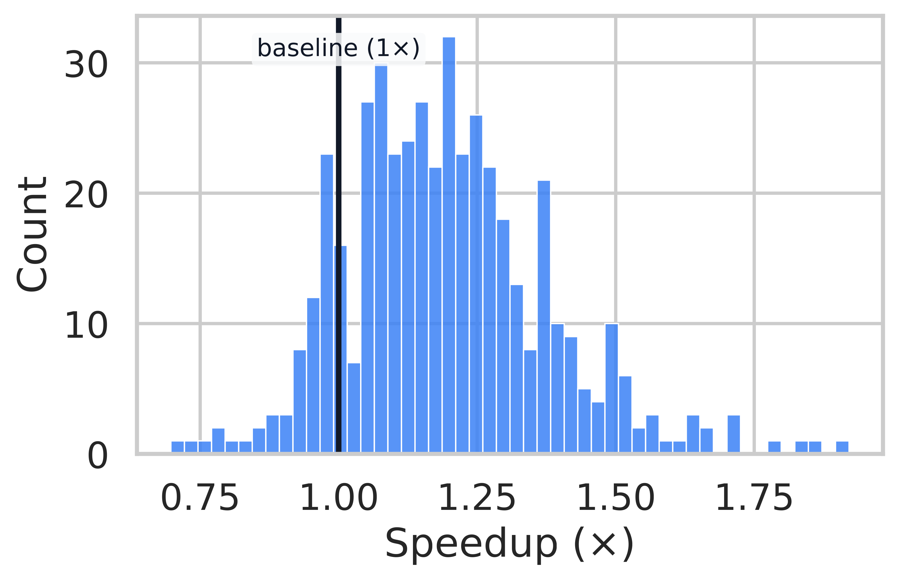

Overview
Scaling inference-time computation has enabled Large Language Models (LLMs) to achieve strong reasoning performance, but inherently sequential decoding leads to substantial latency. We introduce ThreadWeaver, a framework for adaptive parallel reasoning that achieves accuracy on par with popular sequential reasoning models while significantly reducing inference latency. ThreadWeaver utilizes a two-stage parallel trajectory generator for high-quality data creation, a trie-based training-inference co-design for compatibility with off-the-shelf engines, and a parallelization-aware reinforcement learning framework (P-GRPO). Across six mathematical reasoning benchmarks, ThreadWeaver achieves accuracy comparable to cutting-edge sequential models (e.g., 79.9% on AIME24) while delivering up to 1.53x average speedup in token latency.
Sequential reasoning solves the problem step by step iteratively, so its reasoning latency grows
proportionally to the length of the reasoning chain. ThreadWeaver instead creates concurrent
reasoning
threads adaptively that tackle different parts of the solution through spawn and
join operations, effectively shortening the critical path when additional compute is
available.
Methodology
Parallel Trajectory Format
We extend standard autoregressive generation with
lightweight control tokens (<Parallel>,
<Outlines>,
<Thread>) arranged in a fork-join pattern.
Deep Dive: Trajectory Structure
Our format introduces specific tags to manage parallelism:
<think>: Marks the start of the reasoning trajectory, which may contain sequential segments and zero or more parallel blocks.<Parallel> ... </Parallel>: Defines a parallel block. This is the container for branching logic.<Outlines> ... </Outlines>: Consists of numbered<Outline>entries. These declare independent sub-tasks before they are executed. This planning step is crucial for the model to organize its parallel execution.<Thread> i: The execution trajectory of the i-th sub-task. Crucially, threads are generated independently and must not reference other threads. At inference, each thread is generated in parallel by the engine.
This structured trajectory allows the model to explicitly define
independent sub-tasks. The runtime orchestrator spawns parallel generation for
each
<Thread> while decoding all other segments autoregressively.
This
means the full trajectory can be generated without any modifications to the
underlying inference engine (like vLLM or SGLang).
Format for parallelized reasoning trajectories.
Inference State Machine
Our inference orchestrator manages the "spawn" and "join" operations using standard request-completion APIs, allowing deployment on standard engines like vLLM or SGLang without modification.

Deep Dive: The 5-Phase State Machine
We implement inference as a minimal state machine operating on request-response pairs. This allows us to use standard text-completion APIs without custom CUDA kernels or engine hacks.
- Sequential Phase: The model decodes sequentially (standard
autoregressive generation) until it emits the
</Outlines>token. This token acts as a stop signal for the sequential phase. - Parse Outlines: The orchestrator extracts the numbered
<Outline>entries from the generated text. These outlines define what needs to be done in parallel. - Parallel Phase: For each outline i, the orchestrator
issues a separate completion request. Each request is seeded with the prompt
<Thread> i:appended to the previous context. These requests run in parallel on the inference engine. Each thread stops generating when it hits</Thread>. - Join: Once all threads are complete, the orchestrator
concatenates
the original context and all the generated thread outputs. It appends the
closing
</Parallel>tag to form the context for the next phase. - Continue: The model resumes sequential decoding from the joined context until it hits the next parallel block or the end of the response.
Why this matters: Because we use standard API calls, ThreadWeaver inherits all existing serving optimizations like paged attention and prefix caching. Prefix caching is particularly important here, as it prevents re-computing the KV cache for the shared prefix when spawning multiple threads.
Inference-time request sequence. Timestep 1 decodes the prefix sequentially. Timestep 2 launches completion requests per outline in parallel. Timestep 3 resumes sequential decoding.
Trie-Based Training
We flatten the reasoning tree into a single sequence using a Trie structure with ancestor-only attention masking, preventing information leakage between threads during training.

Deep Dive: Trie Construction & Masking
To fine-tune the model to output these parallel structures, we need to align the training data with the inference process. We use a Trie (prefix tree) approach:
- Extraction: We first extract all
<context, completion>pairs that the inference state machine would encounter. Each context is a prompt (or partial generation), and each completion is the model's response (e.g., a single thread). - Trie Construction: We insert these units into a token-level Trie. The root is the shared prompt. Branches in the Trie represent divergent continuations (e.g., different parallel threads). Nodes share the same ancestor path but are isolated from siblings.
- Flattening & Masking: We traverse the Trie to produce a single flat sequence for training. Crucially, we build an ancestor-only attention mask. Token i can attend to token j if and only if j is an ancestor of i in the Trie.
The Result: This prevents "cross-thread leakage" during training. Thread 1 cannot attend to Thread 2, even though they are packed into the same training sequence. This ensures that the training objective perfectly matches the independent parallel generation used at inference time.
Our training sequence formatting. (1) Extract context-completion pairs. (2) Insert into a token-level trie. (3) Traverse the trie to produce a flat sequence.
View Details: Handling Multiple Parallel Blocks

Trie-based sequence merging with more than one parallel block. Even with multiple fork-join structures, we flatten the tree into one packed training sequence.
Parallel Trajectory Generation
Obtaining high-quality parallel reasoning data is difficult. We use a two-stage pipeline to create it from sequential data.
Stage 1 Lightweight Rewriting
We use a strong LLM (GPT-5) to identify parallel blocks in sequential traces. Unlike other methods, we do not regenerate the whole text. We perform minimal "surgical" rewrites to add in parallel annotations and remove cross-thread dependencies, preserving the original reasoning quality.
Stage 2 Scalable Self-Training
We scale from 1k to 17k samples by having the model generate its own parallel data. We filter these trajectories for both format correctness and answer correctness, creating a massive dataset aligned with the model's own distribution. Training with this scaled dataset leads to improved performance with parallel reasoning.
Dataset Statistics
| Metric | Sequential (Sampled) | Stage 1 (Rewritten) | Stage 2 (Self-Train) |
|---|---|---|---|
| Size (Trajectories) | 1,000 | 959 | 17,491 |
| Avg. Parallel Ratio | 0.00 | 0.77 | 0.68 |
| Self-Parallelism Speedup | 1.00x | 1.35x | 1.22x |
| Avg. Parallel Blocks | 0.0 | 6.26 | 4.00 |
Deep Dive: Pipeline Details
Stage 1: LLM Rewriting (Cold Start)
We start with standard sequential reasoning traces (Chain-of-Thought). We use a strong LLM (like GPT-4 or 5) to annotate and rewrite them into our parallel format. Crucially, we do not regenerate the entire solution. Instead, we use a 5-step pipeline that identifies parallel blocks, extracts threads, and performs minimal "surgical" rewrites to remove cross-thread dependencies (e.g., changing "the previous result" to an explicit value). This preserves the original reasoning quality while enforcing independence.
Stage 2: Self-Training with Reward Filtering
LLM rewriting is expensive and doesn't scale. To solve this, we use the data from Stage 1 to fine-tune a "cold start" model. Then, we use this model to generate its own parallel trajectories on a massive dataset (53k prompts).
We filter these self-generated trajectories using two criteria:
- Format Correctness: Must follow the strict XML schema.
- Answer Correctness: The final answer must match the ground truth.
This yields a large-scale, high-quality dataset that is aligned with the model's own generation patterns, bridging the gap between "rewritten" data and actual inference.
P-GRPO Reinforcement Learning
We introduce Parallelization-Aware GRPO (P-GRPO) to jointly optimize for accuracy and latency reduction.
Parallelization-Aware Reward
We introduce a dual-objective reward: Correctness + Acceleration. The
acceleration term is proportional to the reduction in the "critical path" (longest
thread), incentivizing the model to parallelize whenever possible without
sacrificing
accuracy.
Stable Optimization
Standard RL methods fail with parallel rewards because variance normalization causes the acceleration term to dominate. We introduce mean-centered normalization to stably optimize for both speed and accuracy.
Deep Dive: P-GRPO & Rewards
Parallelization-Aware Reward
We don't just reward correct answers. We add a soft acceleration
reward. The total reward is
r = Correctness + Acceleration.
The acceleration term is proportional to the reduction in the "critical path"
(longest
thread) compared to the total token count. This incentivizes the model to
parallelize
whenever possible, but only if it leads to a correct answer.
Thread-Wise Advantage Broadcast
Standard RL methods struggle with parallel branches. In P-GRPO, we compute a single scalar reward for the entire trajectory and then broadcast the advantage to all tokens in that trajectory. This is mathematically justified and avoids the complexity of assigning partial credit to individual threads.
Mean-Centered Normalization
Standard GRPO divides by the standard deviation of rewards. This is problematic when all rollouts are correct: the correctness reward becomes constant and is removed by mean-centering. The remaining variance comes solely from the acceleration term. Dividing by the standard deviation then re-scales this acceleration term to unit variance, effectively cancelling out our small weighting factor (\(\rho\)) and causing the model to aggressively optimize for speed at the expense of accuracy. We fix this by removing the standard-deviation normalization:
This simple change stabilizes training and maintains a healthy balance between accuracy and speed.
P-GRPO Loss Function
The full P-GRPO loss function is defined as:
Where \(A_{p,i}\) is the broadcasted advantage, \(M_i\) is the number of parallel blocks in trajectory \(i\), and the inner sum accumulates log-probs over all completion tokens in the parallel structure.
Algorithm: P-GRPO Training Loop
Performance
ThreadWeaver matches the accuracy of sequential baselines while providing substantial speedups across 6 major benchmarks. Our results highlight not just efficiency, but the importance of high-quality data and stable training objectives.
Experimental Setup
We evaluate ThreadWeaver atop Qwen3-8B, a state-of-the-art reasoning model. Our evaluation pipeline is designed to rigorously test both the accuracy and efficiency of parallel reasoning across diverse mathematical domains.
Training Pipeline
- Supervised Fine-Tuning (SFT): We fine-tune Qwen3-8B for 8 epochs on 959 high-quality rewritten trajectories to initialize the parallel reasoning capabilities.
- Self-Training: The model generates its own parallel data on 53k prompts. We filter for correctness, yielding 17k high-quality samples for a second stage of SFT (1 epoch).
- Reinforcement Learning (RL): We apply P-GRPO for 350 steps with a batch size of 128 and 8 rollouts per prompt, optimizing for both accuracy and latency.
Evaluation Protocol
- Benchmarks: We test on 6 datasets: AIME24, AIME25, AMC23, MATH500, Minerva Math, and OlympiadBench.
- Baselines: We compare against a strong Sequential GRPO Baseline trained on the exact same prompts with identical RL hyperparameters.
- Compute: All experiments use vLLM for inference with a 40k token budget per response. Wall-clock measurements are conducted on 4x H100 GPUs.
Accuracy & Efficiency Comparison
Comparison between sequential GRPO baseline and ThreadWeaver on Qwen3-8B across all six benchmarks. ThreadWeaver achieves comparable accuracy with significantly lower latency.
| Metric | Model | AIME24 | AIME25 | AMC23 | MATH500 | Minerva | Olympiad | Avg |
|---|---|---|---|---|---|---|---|---|
| Accuracy | Qwen3-8B (Seq.) | 78.3% | 61.6% | 92.6% | 91.8% | 43.9% | 65.0% | 72.2% |
| ThreadWeaver | 79.9% | 60.5% | 92.3% | 91.4% | 43.7% | 63.5% | 71.9% | |
| Latency | Qwen3-8B (Seq.) | 19.4k | 24.6k | 13.8k | 7.2k | 10.6k | 15.2k | 15.1k |
| ThreadWeaver | 16.9k | 24.0k | 12.0k | 6.4k | 7.3k | 12.8k | 13.2k | |
| Avg Speedup | 1.14x | 1.03x | 1.16x | 1.23x | 1.53x | 1.21x | 1.22x | |
| Max Speedup (correct only) | 1.47x | 1.21x | 1.67x | 3.05x | 3.56x | 1.92x | - | |
Real-World Wall-Clock Speedup
Token latency is a proxy for critical path length. To verify real-world gains, we measured wall-clock time on 50 MATH500 problems using 4 GPUs.
The speedup in token latency also transfers to real-world wall-clock time speedup: enabling parallelization reduces wall-clock latency by 1.14x. This demonstrates that ThreadWeaver can effectively convert additional computational resources into lower inference latency.
Speedup Distribution Analysis
AIME 24
MATH-500

AMC 23
OlympiadBench
Per-problem speedup distributions. A vertical line at 1.0x marks parity. ThreadWeaver achieves significant speedups on highly decomposable problems (right tail of distribution).
Comparison with State-of-the-Art
| Model | Size | AIME24 Accuracy | Activation Ratio |
|---|---|---|---|
| Multiverse (Yang et al., 2025) | 32B | 53.8% | - |
| Parallel-R1-Unseen (Zheng et al., 2025) | 4B | 16.3% | 27.3% |
| ThreadWeaver (Ours) | 8B | 79.9% | 79.9% |
Qualitative Analysis
ThreadWeaver effectively decomposes complex problems into independent sub-tasks. In this success case, the model correctly identifies two parallel paths to evaluate a trigonometric expression: one using symbolic identities and another using numerical verification.
Success Case: Trigonometric Expression Evaluation
Prompt: Evaluate \(\sin (\arcsin 0.4 + \arcsin 0.5) \cdot \sin (\arcsin 0.5 - \arcsin 0.4)\).
Failure Case: Redundant Computation
In this example (counting trailing zeros in 42!), the model correctly identifies the strategy (counting factors of 5). However, instead of splitting the work (e.g., one thread counting factors, another verifying), both threads perform overlapping computations. Thread 1 does the main calculation, while Thread 2 redundantly verifies it on smaller numbers, which doesn't accelerate the primary task.
2: Validate method on smaller factorials (10!, 25!)...
Ablation Studies
Impact of Self-Training & RL
We dissect the contribution of each stage in our training pipeline. A key metric here is
Format Correctness, which measures the percentage of trajectories that
validly follow the <Thread>...</Thread> structure.
As shown below, Self-Training is critical for structural alignment. The initial SFT stage (959 samples) yields a model that often fails to produce valid parallel XML (only 56.4% valid). Scaling up with Self-Training (17k samples) boosts this to 77.0%, effectively "teaching" the model the parallel format. Finally, RL (P-GRPO) optimizes the reasoning content itself, pushing accuracy from 74.0% to 79.9% while maintaining high efficiency.
| Model Configuration | Format Correctness | AIME24 Accuracy | Token Latency |
|---|---|---|---|
| Qwen3-8B + 1st SFT (959 samples) | 56.4% | 74.5% | 17.6k |
| Qwen3-8B + Self-Training (17k samples) | 77.0% | 74.0% | 17.3k |
| Qwen3-8B + Self-Training + RL | 72.4% | 79.9% | 16.9k |
Reward Normalization (P-GRPO)
| Setting | Accuracy | Mean Longest Thread |
|---|---|---|
| With Std. Normalization | 74.79% | 18.7k |
| Mean-Centered Only (Ours) | 79.90% | 16.9k |
Citation
If you find our work helpful or inspiring for your research, please cite it as follows:
@article{lian2025threadweaver,
title={ThreadWeaver: Adaptive Threading for Efficient Parallel Reasoning in Language Models},
author={Lian, Long and Wang, Sida and Juefei-Xu, Felix and Fu, Tsu-Jui and Li, Xiuyu and Yala, Adam and Darrell, Trevor and Suhr, Alane and Tian, Yuandong and Lin, Xi Victoria},
journal={arXiv preprint arXiv:2512.07843},
year={2025}
}